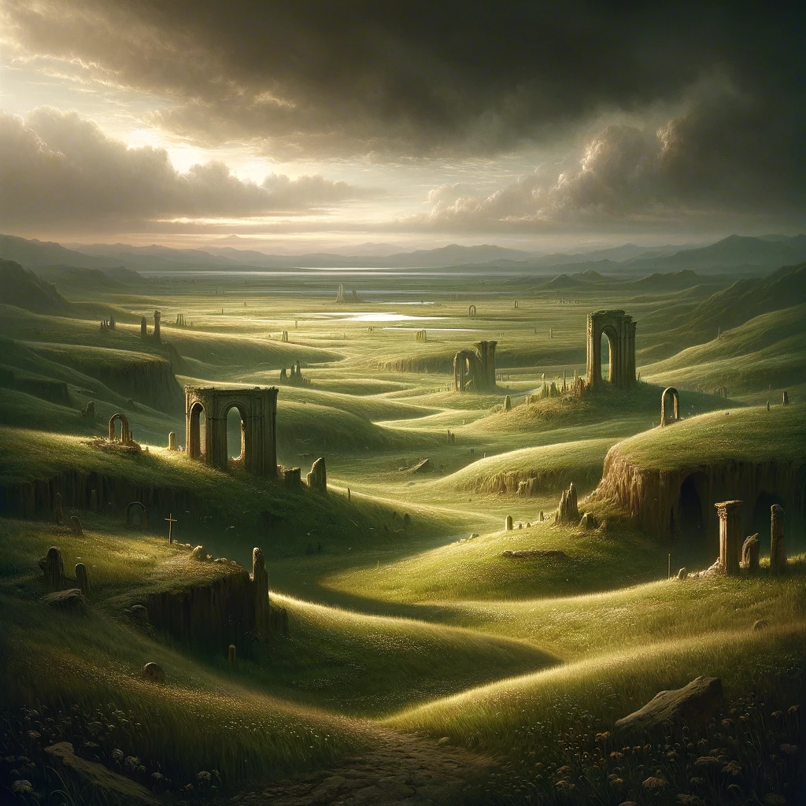
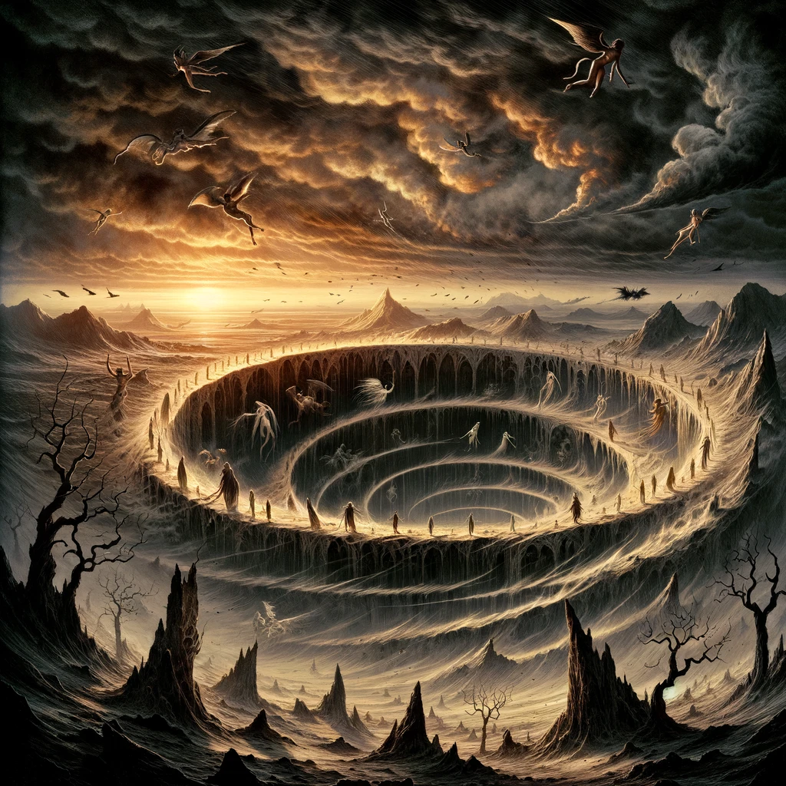
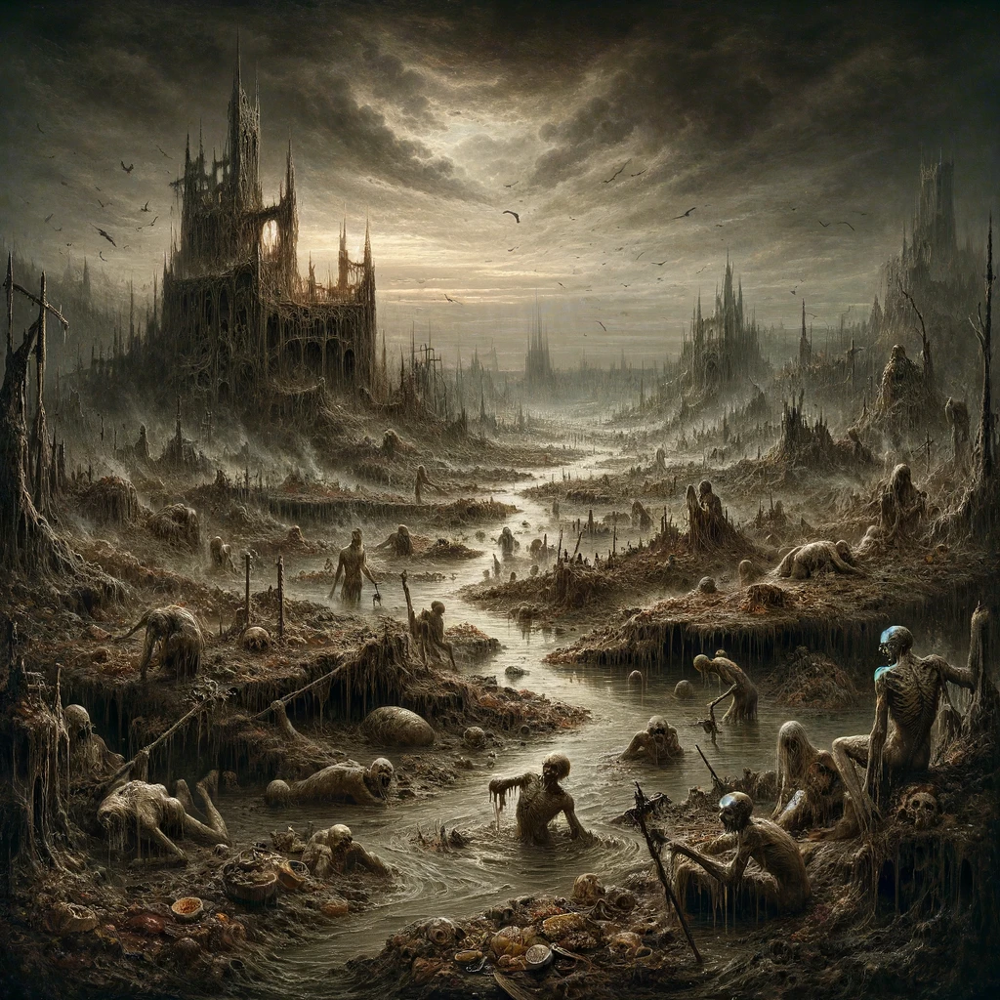
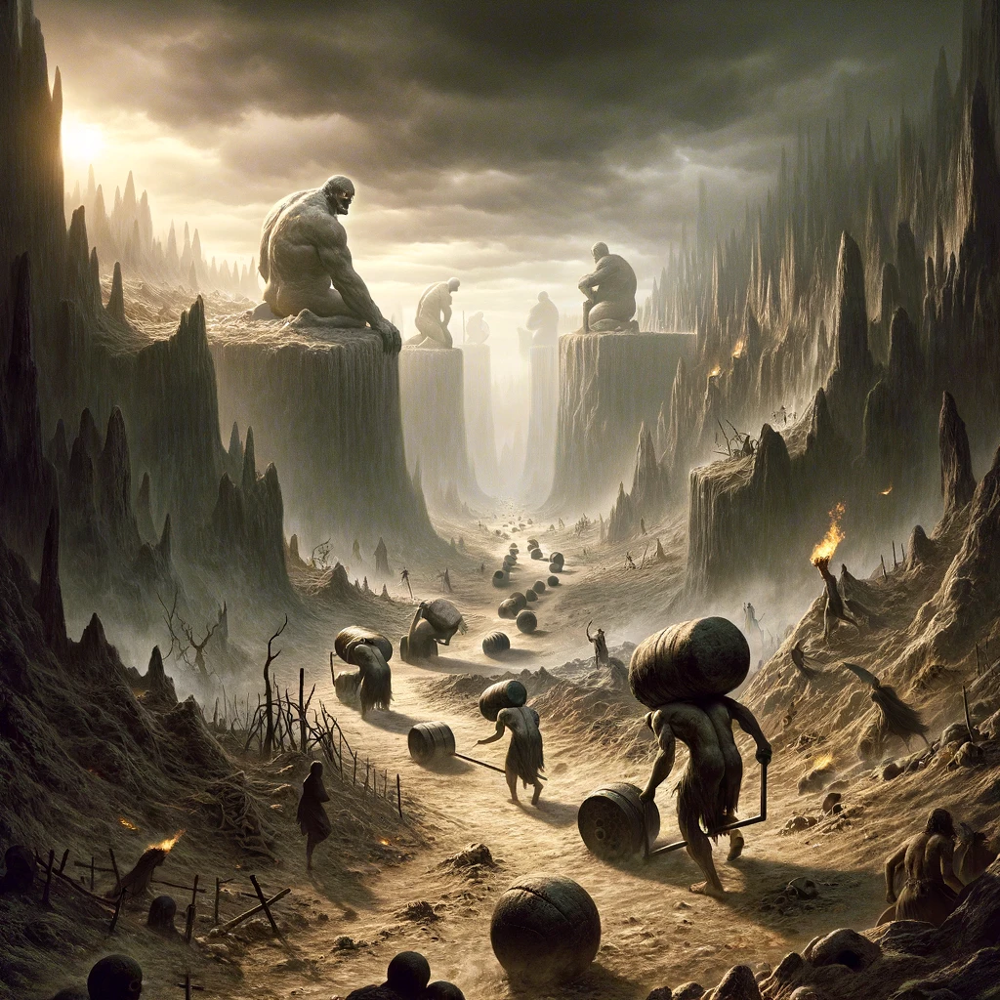
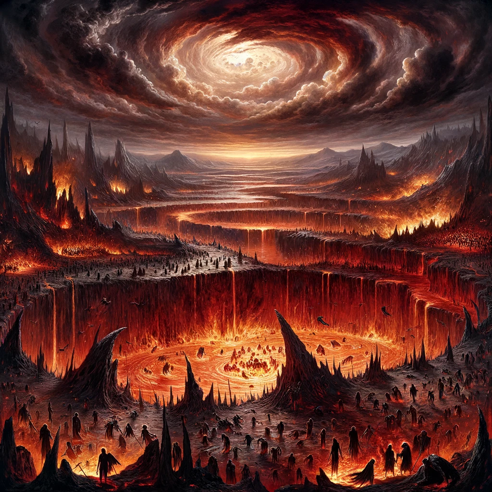
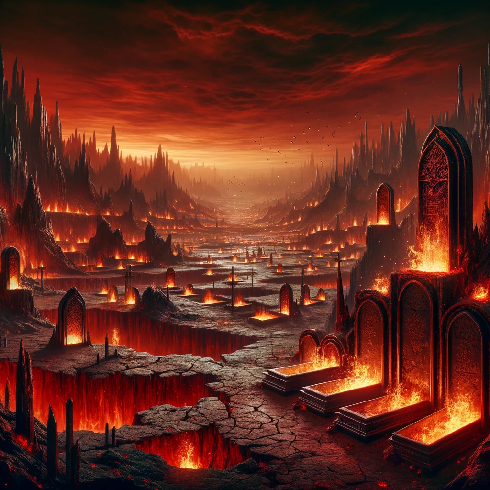
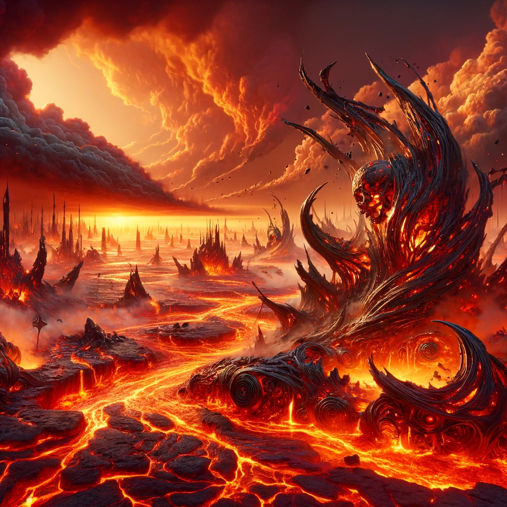
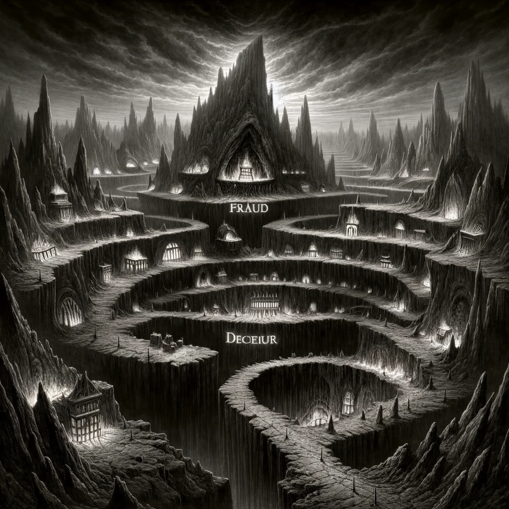
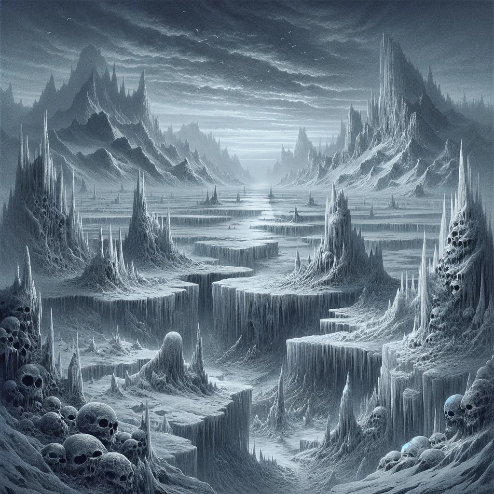

地狱共有九层：温和、贪欲、暴食、贪婪、愤怒、异端、暴力、欺诈、背叛
温和：草地和断壁残垣映于灰暗的天空之下，却并不显得恐怖

贪欲：荒地与枯萎的树木，狂风不断吹打着罪人

暴食：充斥着腐烂的食物和恶臭的污泥

贪婪：山峦之间，罪人们背负沉重的货物，在巨人的监视下，做着无尽的苦力

愤怒：炽热的岩浆之河中，满是暴怒的恶魔

异端：无尽的坟墓中，罪人的灵魂被不断地焚烧

暴力：滚烫的熔岩之海不断地翻腾

欺诈：阴暗的天空之下，没有一丝色彩

背叛：寒风狂啸，罪人被冰封于此
